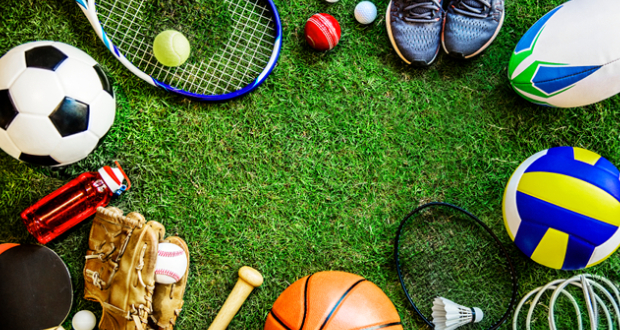

Release The Stress
Home

Physical Activity:
Sports involve physical movement, which helps to release endorphins, neurotransmitters that act as natural painkillers and mood elevators. Regular exercise through sports can reduce levels of cortisol, the stress hormone, leading to feelings of relaxation and well-being.
Distraction and Focus:
Sports require concentration and focus, diverting attention away from stressors and worries. When individuals are fully immersed in a game or physical activity, they often experience a mental break from stressors, providing relief and relaxation.
Social Support:
Many sports are played in a team setting or involve interaction with others, providing opportunities for socialization and support. Connecting with teammates or fellow athletes can foster a sense of camaraderie, belonging, and mutual encouragement, which can buffer against stress.
Outlet for Emotions:
Sports provide a healthy outlet for expressing and managing emotions. Physical exertion can help individuals release pent-up frustration, anger, or anxiety in a constructive manner, leading to emotional catharsis and a sense of relief.
Sense of Achievement:
Setting and achieving goals in sports, whether personal or team-oriented, can boost self-esteem and confidence. Accomplishments such as mastering a new skill, improving performance, or winning a game can provide a sense of pride and satisfaction, counteracting feelings of stress and inadequacy.
Healthy Lifestyle:
Regular participation in sports is often associated with adopting a healthy lifestyle, including balanced nutrition, adequate sleep, and stress management practices. These lifestyle factors contribute to overall resilience against stress and support optimal physical and mental health.
Time Management:
Involvement in sports requires individuals to manage their time effectively, balancing training or practice sessions with other responsibilities. This structured approach to time management can help individuals better organize their lives, reducing feelings of overwhelm and stress.
Enjoyment and Fun:
Above all, sports are enjoyable and fun for many people. Engaging in activities that bring joy and pleasure can serve as a powerful antidote to stress, promoting relaxation, laughter, and a positive outlook on life.